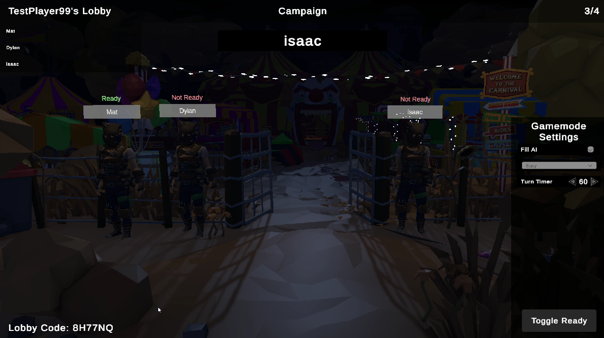

A multiplayer horror card and board game where I build networked gameplay systems, modular items, targeting flows, game-mode logic, and player-facing feedback.

Overview
Gameplay systems that have to work for everyone at the table.
Dealt in Darkness is a multiplayer horror card and board game built in Unity. As a Gameplay Engineer, my work has centered on networked item behavior, player targeting, card interactions, turn flow, game-mode logic, and gameplay feedback. Features frequently cross server authority, hidden information, local presentation, and shared state, so a large part of the work is making sure each interaction behaves correctly for the acting player, the target, and every observing client.
Recent Highlighted Work
FlashFire, items, and multiplayer gameplay.
01
FlashFire Rework
Worked on a major rework of FlashFire, a hidden-information game mode where hunters stalk one another across a shared grid. My work has touched movement, shooting, passing, foraging, turn flow, hunter placement and reveal behavior, and the server-authoritative closing-fire progression that forces players inward as the match develops.
02
Modular Networked Items
Built and extended reusable multiplayer item behavior across card logic, targeting, feedback, and state synchronization. Recent item work includes Spider’s Eggs, Card Lighter, Inspector’s Spectacles, Swap Hands, sensitivity-changing effects, camera effects, audio effects, and supporting debug tools used to test them quickly.
03
Homunculus Effect Propagation
Implemented the Homunculus item so player-specific effects can mirror to another player without creating chained propagation. The final approach kept effect-specific receivers and added controlled forwarding for effects such as Jumpscare, Owlfingers, sensitivity changes, Paranoia, and Earworm while preserving network synchronization and existing debug workflows.
04
Multiplayer Debugging & Feedback
Tracked down issues across targeting, turn state, item visuals, UI, and local/networked sessions, including edge cases where the same action could be repeated incorrectly or client presentation drifted from authoritative game state. I also built reusable hooks and feedback paths so new gameplay behavior can integrate without tightly coupling unrelated systems.